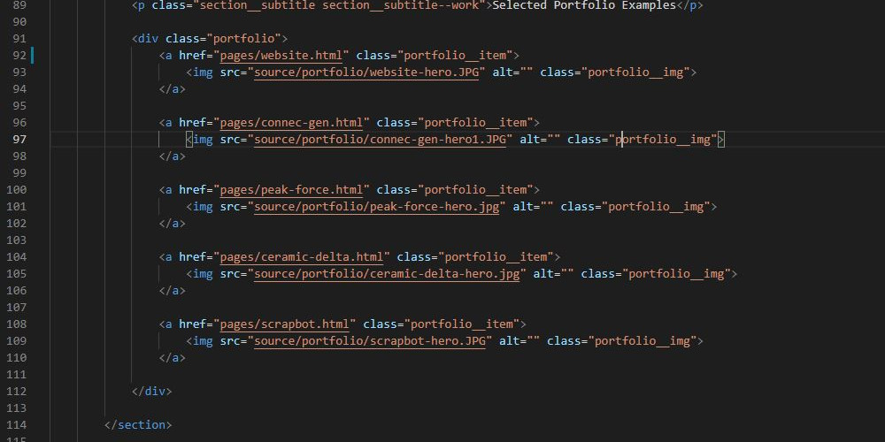

This website itself has had the HTML, CSS and JS written from scratch as a means to not only showcase my work examples and personal projects publically, but to also act as an ongoing project itself. The website project code is hosted on github here and then delivered via cloudflare.
The main advantages for myself for choosing to do this is so much practical education is garnered along the way. It would be far more efficient to simply go and use one of the many online portfolio services or website generators, however, nothing about the back end workings would be learned, there would be restrictions on creative freedoms and, in a lot of cases, ongoing costs.
This website will continue to evolve into the future.